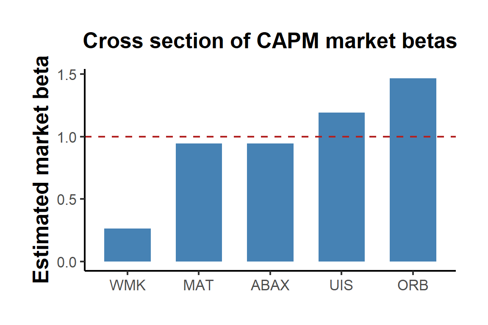

Chapter 72 Structural Models in Finance
This chapter carries the structural and generalized method of moments toolkit of Chapter 59 into empirical finance, the field in which that toolkit was in many respects born. The moment-based estimators that the earlier chapters developed for demand systems and dynamic games have a parallel lineage in asset pricing, where the central object is not a demand elasticity or a marginal cost but a stochastic discount factor that prices every traded payoff. The aim here is to show that the same logic, name the economic parameter, write the moment condition that the theory implies, and estimate by matching sample moments to population restrictions, organizes a large body of financial econometrics, and to make the connection concrete with a real-data replication that tests the capital asset pricing model by generalized method of moments.
72.1 Structural and GMM Methods in Empirical Finance
The reason generalized method of moments became the workhorse of empirical asset pricing is that the first-order conditions of an optimizing investor are themselves moment conditions, and they hold without any auxiliary assumption that returns are independent, identically distributed, or normal. This is the insight of Hansen (1982), whose estimator was introduced in the very paper that, with its companion application, tested a consumption-based asset pricing model on aggregate data. The structural content of the exercise lives entirely in a single restriction, the Euler equation of the representative investor, and everything else is sample averaging and a careful account of the dependence in the data.
72.1.1 The Stochastic Discount Factor and Euler Equation Estimation
The organizing concept is the stochastic discount factor, the random variable \(m_{t+1}\) that prices every asset through the fundamental relation \(\mathbb{E}_t[m_{t+1} R_{t+1}^i] = 1\) for the gross return \(R_{t+1}^i\) on any asset \(i\). A consumption-based model identifies \(m_{t+1}\) with the investor’s intertemporal marginal rate of substitution, so that under power utility \(m_{t+1} = \beta (C_{t+1}/C_t)^{-\gamma}\), with \(\beta\) the discount factor and \(\gamma\) the coefficient of relative risk aversion. The Hansen and Singleton program takes the conditional Euler equation, multiplies it by variables in the investor’s information set to convert it into an unconditional moment, and estimates the deep preference parameters \((\beta, \gamma)\) by generalized method of moments. Because instruments in the information set can be stacked, the system is typically overidentified, and the same machinery that delivers the estimate delivers a specification test of the model through the overidentifying restrictions, a point developed below and in Chapter 59.
Two structural diagnostics organize the broader literature. The first is the Hansen and Jagannathan bound, which turns the pricing relation around to ask what volatility any candidate discount factor must have to price a given set of returns, delivering a region in mean and standard deviation space that a valid \(m_{t+1}\) must enter and against which competing models are judged. The second is the unifying treatment of Cochrane (2005), which shows that essentially every asset pricing model, the capital asset pricing model, the consumption model, multifactor models, and the arbitrage pricing theory, is a statement about a stochastic discount factor, and that linear factor models correspond to a discount factor that is linear in the factors, \(m_{t+1} = a - b^\top f_{t+1}\). This last representation is the bridge between the consumption-based Euler equation and the factor regressions that dominate applied work, and it is the representation the replication below exploits.
72.1.2 Demand Systems for Asset Pricing
A more recent structural turn imports the demand-system methodology of Chapter 60 directly into asset pricing. The demand system approach of Koijen and Yogo (2019) treats institutional investors as choosing portfolios over assets whose characteristics, market equity, book-to-market, profitability, and the like, play the role that product characteristics play in a market for differentiated goods. Each investor’s holdings are modeled as a characteristics-based logit demand for stocks, in the spirit of the random-coefficients discrete-choice demand of Berry, Levinsohn, and Pakes, and asset prices are the equilibrium that clears the market given the demand curves of all investors and the supply of shares. The payoff is a structural account of why prices move that does not reduce to a representative agent: price impact, the elasticity of demand for individual stocks, and the role of large institutions all become estimable objects, and counterfactuals such as the price effect of a shift in institutional mandates become tractable. The estimation confronts the same endogeneity that the demand literature confronts, since prices enter the holdings equation and are determined in equilibrium, and it is handled with instruments built from the cross section of investor characteristics in the familiar instrumental-variables manner.
72.1.3 Structural Corporate Finance by Simulated Method of Moments
Where asset pricing supplies closed-form Euler equations, corporate finance more often yields dynamic models whose moments have no analytic expression, and there the natural estimator is the simulated method of moments of Chapter 59. A dynamic model of investment and financing specifies a firm that chooses investment, leverage, and payout each period subject to adjustment costs, financing frictions, and stochastic profitability, and the model’s policy functions are solved numerically rather than in closed form. Hennessy and Whited (2007) estimate exactly such a model to quantify the cost of external finance, simulating panels of firms from the structural model at trial parameter values and choosing the parameters so that simulated moments, investment-cash flow sensitivities, leverage ratios, and the like, match their empirical counterparts. The same simulated-moments strategy underlies the dynamic capital structure models associated with Strebulaev and Whited, in which the observed sluggishness of leverage adjustment is read as evidence on the magnitude of financing and adjustment costs rather than as a puzzle. The structural payoff is that the estimated frictions can be switched off in counterfactual simulations to measure their effect on firm value and investment, which no reduced-form regression can do.
72.1.4 Structural Models of Financial Intermediation
The final strand applies the discrete-choice and demand-estimation apparatus to the industrial organization of finance itself. Banking and insurance markets are markets for differentiated products, deposit accounts, loans, and policies, over which households and firms choose, and the same random-coefficients logit demand that prices stocks in the demand-system approach prices banking relationships in models of deposit-market and lending-market competition. Estimating demand for deposits or insurance contracts with these methods recovers the markups, switching costs, and search frictions that sustain market power in intermediation, and it supports the merger and counterfactual analysis that regulators require. This is the structural industrial organization of Chapter 60 applied to financial firms rather than consumer-goods producers, and it closes the loop between the demand-estimation and asset-pricing uses of the same discrete-choice foundation.
72.2 Replication: Testing the CAPM by GMM
The capital asset pricing model is the simplest nontrivial stochastic discount factor model, and it admits a clean generalized method of moments test on return data. In the linear-factor representation the discount factor is affine in the market excess return, and the model’s empirical content reduces to the proposition that the intercept, Jensen’s alpha, is zero for every asset once its return is projected on the market. We estimate the alpha and the market beta for five individual stocks jointly and test the alphas against the null of zero, using the Finance data that ship with the gmm package. The data are daily excess returns, and the five assets are the consumer-staples name WMK alongside UIS, ORB, MAT, and ABAX.
library(gmm)
data(Finance)
n <- 500
rf <- Finance[1:n, "rf"]; rm <- Finance[1:n, "rm"]
z <- as.matrix(Finance[1:n, 1:5] - rf) # excess returns of 5 stocks
zm <- rm - rf # market excess return
res <- gmm(z ~ zm, x = zm) # CAPM: alpha (Jensen) + beta, HAC-robustThe estimator regresses each asset’s excess return on the market excess return within a single generalized method of moments system, using the market excess return as the instrument, so the moment conditions are the orthogonality of each asset’s pricing error to a constant and to the market factor. The weighting matrix is computed with a heteroskedasticity-and-autocorrelation-consistent estimator using the Quadratic Spectral kernel, which is the reason generalized method of moments rather than ordinary least squares is the natural estimator for return data: daily returns are heteroskedastic and serially dependent, and the kernel-based weighting delivers valid standard errors without the independent, identically distributed normal assumption that classical regression inference would require.
Table 72.1 collects the estimated Jensen alphas and market betas with their generalized method of moments standard errors. The numbers reproduce the documented behavior of these series: every estimated alpha is statistically indistinguishable from zero, while every beta is significant and economically sensible.
# Pull the alpha and beta estimates and their HAC p-values directly from the fit.
sm <- summary(res)$coefficients
stocks <- c("WMK", "UIS", "ORB", "MAT", "ABAX")
capm_tab <- data.frame(
Stock = stocks,
Alpha = round(sm[paste0(stocks, "_(Intercept)"), "Estimate"], 4),
Alpha.p = round(sm[paste0(stocks, "_(Intercept)"), "Pr(>|t|)"], 3),
Beta = round(sm[paste0(stocks, "_zm"), "Estimate"], 3),
Beta.p = round(sm[paste0(stocks, "_zm"), "Pr(>|t|)"], 3),
row.names = NULL
)
knitr::kable(
capm_tab,
col.names = c("Stock", "Jensen alpha", "Alpha p-value",
"Market beta", "Beta p-value"),
caption = "GMM estimates of Jensen's alpha and the market beta for five stocks, daily excess returns, HAC (Quadratic Spectral) standard errors. Every alpha is statistically insignificant; every beta is significant and spread sensibly around one."
)| Stock | Jensen alpha | Alpha p-value | Market beta | Beta p-value |
|---|---|---|---|---|
| WMK | -0.0062 | 0.880 | 0.265 | 0.003 |
| UIS | -0.0401 | 0.708 | 1.191 | 0.000 |
| ORB | 0.0345 | 0.824 | 1.468 | 0.000 |
| MAT | 0.0309 | 0.677 | 0.945 | 0.000 |
| ABAX | -0.1004 | 0.627 | 0.946 | 0.026 |
The market betas in Table 72.1 tell the cross-sectional story the model predicts. They spread around one in the way risk exposure should: the consumer-staples stock WMK has a low beta of 0.265, consistent with a defensive name whose return moves little with the market, while the more cyclical UIS and ORB carry betas above one, at 1.191 and 1.468, and MAT and ABAX sit near the market with betas of 0.945 and 0.946. Figure 72.1 displays the cross section of betas against the market line at one.
library(ggplot2)
beta_hat <- summary(res)$coefficients[paste0(c("WMK", "UIS", "ORB", "MAT", "ABAX"), "_zm"), "Estimate"]
beta_df <- data.frame(
Stock = factor(c("WMK", "UIS", "ORB", "MAT", "ABAX"),
levels = c("WMK", "MAT", "ABAX", "UIS", "ORB")),
Beta = as.numeric(beta_hat)
)
ggplot(beta_df, aes(x = Stock, y = Beta)) +
geom_col(fill = "steelblue", width = 0.65) +
geom_hline(yintercept = 1, linetype = "dashed", color = "firebrick") +
labs(
x = NULL,
y = "Estimated market beta",
title = "Cross section of CAPM market betas"
) +
causalverse::ama_theme()
Figure 72.1: Estimated market betas for the five stocks. The dashed line marks the market beta of one; defensive consumer-staples exposure sits below it and cyclical names above.
The interpretation runs directly off the model. The capital asset pricing model predicts that alpha is zero, because in equilibrium no asset earns a return in excess of what its market exposure justifies. The insignificant alphas, of which the WMK estimate of \(-0.0062\) with a p-value of 0.88 is representative, fail to reject that prediction for these assets, which is the outcome the model wants. The betas, meanwhile, are precisely estimated and arrayed as risk exposure should be, low for the defensive staple and high for the cyclical names. The generalized method of moments delivers both results with heteroskedasticity-and-autocorrelation-consistent inference, so the conclusion that the alphas are zero does not rest on the false premise that daily returns are independent and normally distributed.
72.3 Robustness and Extensions
The per-asset regression above is the linear-factor face of a deeper restriction. The single stochastic discount factor formulation states \(\mathbb{E}[m R^i] = 1\) for all assets simultaneously, with the linear factor discount factor \(m = a - b^\top f\), and estimating that one discount factor against many assets overidentifies the parameters. The overidentifying restrictions are the source of Hansen’s J-test, the generalized method of moments specification test that asks whether the pricing errors are jointly zero. It is worth stating clearly that in the per-asset capital asset pricing model estimated here the system is exactly identified, two moments and two parameters per asset, so the J-test is degenerate and carries no information; the test acquires content only when a single discount factor is required to price more assets than it has free parameters, which is the genuinely structural overidentified case.
Three extensions sharpen the exercise. The first adds the size and value factors of Fama and French, available in the Finance data as the smb and hml series, converting the single-factor discount factor into a three-factor one and asking whether the additional risk premia absorb any residual alpha. The second is the joint test of the model across assets: the Gibbons et al. (1989) test evaluates the null that all alphas are zero simultaneously, accounting for the cross-asset correlation of the pricing errors, and it is the canonical efficiency test of a candidate factor portfolio. The third is to move from the regression representation to the discount-factor representation directly and estimate \(a\) and \(b\) in \(m = a - b^\top f\) on a panel of test assets, which is the overidentified setting in which the J-test of Cochrane (2005) becomes the operative model diagnostic.
72.4 Real-World and Expert-Witness Applications
Stochastic discount factor and factor models are not confined to academic asset pricing. Asset managers use factor models to construct portfolios, attribute performance to systematic exposures rather than to skill, and price the risk premia that smart-beta and factor-investing products are built to harvest, so the alpha and beta decomposition of the replication is the daily language of the investment industry. The Federal Reserve and other central banks use the same discount-factor logic to extract risk premia from asset prices and to gauge financial conditions, since the price of risk implied by a fitted stochastic discount factor is a direct read on market sentiment and on the compensation investors demand for bearing macroeconomic risk. The Securities and Exchange Commission and the analysts who support its enforcement work rely on factor models to define normal expected returns, which is the baseline against which abnormal returns are measured.
That last use is the entry point for asset pricing into litigation. In securities-fraud cases the event study is the standard tool for measuring the price impact of an alleged misrepresentation, and the event study is nothing more than a factor model, often the market model estimated above, used to predict the return that would have occurred absent the event so that the residual measures the abnormal movement attributable to it. Expert witnesses estimate these models, defend the choice of estimation window and factors, and translate abnormal returns into damages, and opposing experts contest the specification, so the heteroskedasticity-and-autocorrelation-consistent inference and the joint significance testing discussed here are matters of courtroom consequence rather than mere technique. In valuation disputes the same factor models supply the cost of capital that discounts projected cash flows, and the estimated betas of the replication are precisely the inputs whose magnitude and statistical reliability the parties dispute. The structural discipline of writing down the pricing restriction, estimating it by generalized method of moments, and testing it against the data is therefore not only the foundation of empirical asset pricing but also the evidentiary standard to which financial expert testimony is held.